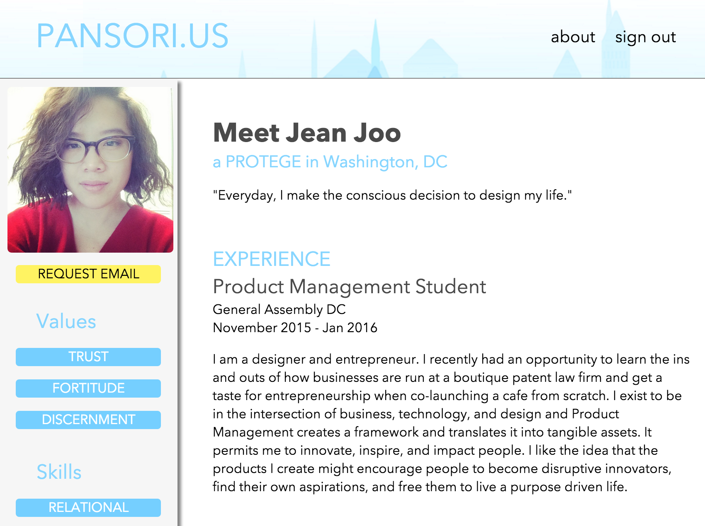
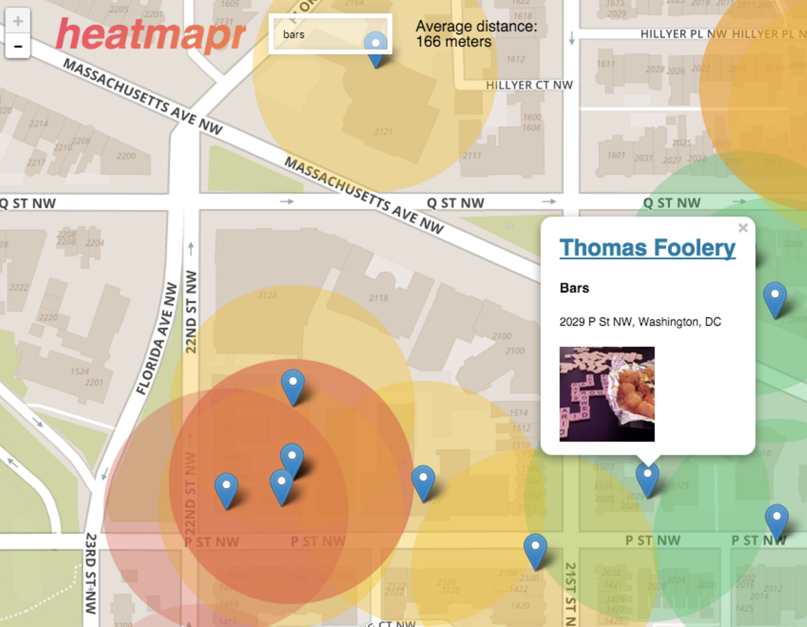
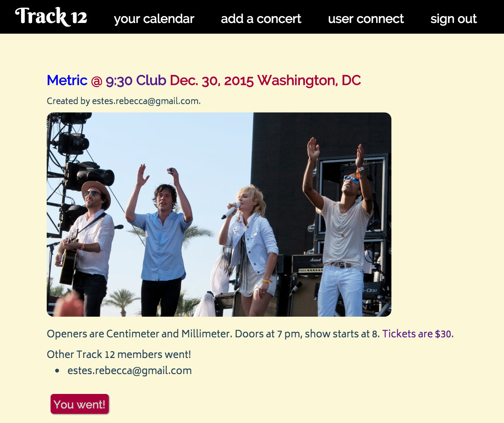

As of March 2016, I'm building out pages in Backbone, SASS, and JavaScript with RP3. I'm seeking a permanent position to start after my contract finishes up next month. If you're interested, shoot me an email.
Projects
Ready Set OM
An experiment in pairing React and Rails. Users create yoga poses and group them in sequences.
After achieving my my initial goal—a working app—I focused on improving the user experience. In particular, I gave users the option to share their sequences publicly, and integrated jQuery plugins that allowed drag-and-drop and search functionality when building sequences.
Additionally, in the course of building this project I created what is perhaps the only yoga API on the entire internet.

Pansori.us
A social platform that matches young Asian women with mentors.
I worked alongside two other developers, a UX designer, and a product manager to build this networking app. I took the lead on converting the designer's mockups into CSS, including integrating and manipulating user information. The back-end was Rails with a Postgres database.

Heatmapr
A Node.js group project. Integrates Leaflet's mapping abilities and the Yelp API.
I was part a team of four developers who built this app. We all worked together while planning the structure and styling, and met at least daily to merge feature branches and divide our next tasks. My main personal responsibilities were implementing and customizing the Leaflet API that serves as our backdrop, building out user authentication, and deployment.

Track 12
A social concert-tracking platform, built in Ruby on Rails.
During my first major project, I had time to build out extra functionality, like a robust friending system between users.
Finally, I wrote an introductory tutorial on React.js, suitable for anyone with intermediate Javascript experience. It walks you through setup and states, and introduces properties.